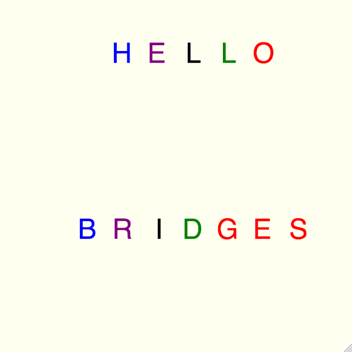

BRIDGES Game API Tutorial
Goals
To teach students the functions that allow them to interact with their games.
- Understand the main variables used to run a bridges game.
- Learn about the initialize() method.
- Understand ways students can implement their own methods and how to traverse the grid using for loops.
- Learn about the gameLoop() method and the 10 different controls available in non-Blocking games.
- Prepare the main method and run a game.
ToDo
- Paint the screen a single color and display a set message
- Upon a key press, display a different message
Check comments in the scaffold for details.
Sample Output

Variables
Sets the size of the students grid. Grids are limited to 1024 cells. The largest square grid available is 32 x 32.
- int gridColumns
- int gridRows
Variables that will change the color and symbols despalayed in the game:
- NamedColor myBackgroundColor
- NamedColor mySymbolColor
- NamedSymbol mySymbol
Functions
initialize():
- A required bridges function. This runs before the game loop begins allowing the students an oppertunity to set the colors and symbols of their game before it starts.
gameLoop():
- A required bridges function. A recursive method that will run until the game is over or is disconnected. Students can call their own methods here to make their games more complex.
Boolean values that are true when a specific key is being pressed:
- keyUp()
- keyDown()
- keyLeft()
- keyRight()
- keyW()
- keyS()
- keyA()
- keyD()
- keyQ()
- keySpace()
Documentation
You can check the generic Game Tutorial
Java
NonBlockingGame
NamedColor
NamedSymbol
C++
NonBlockingGame
NamedColor
NamedSymbol
Python
NonBlockingGame
NamedColor
NamedSymbol